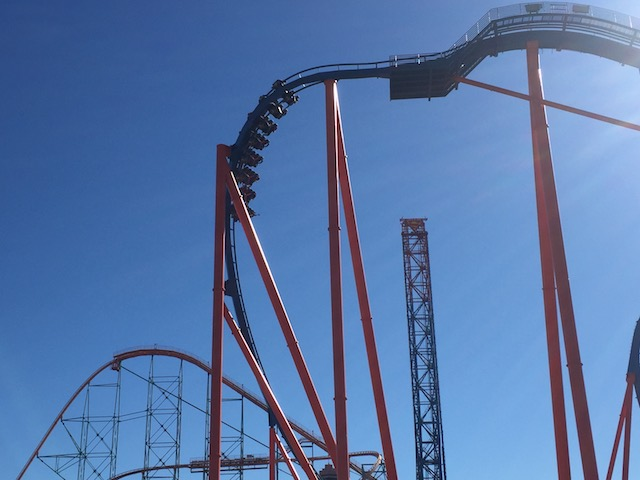
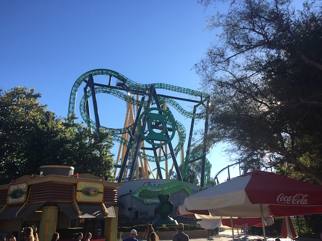
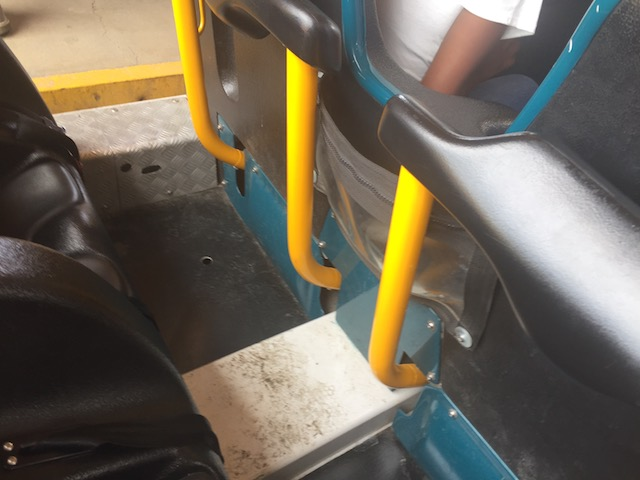
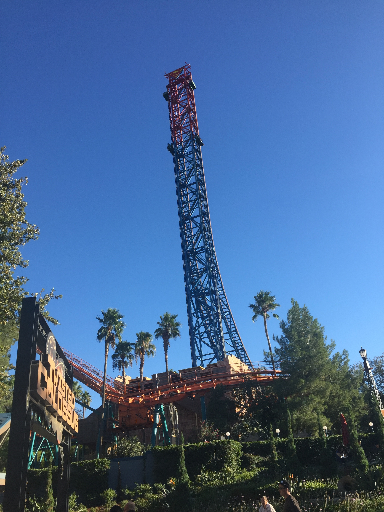
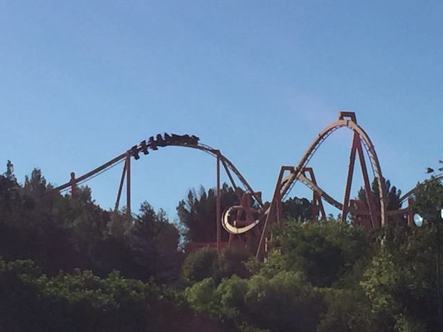
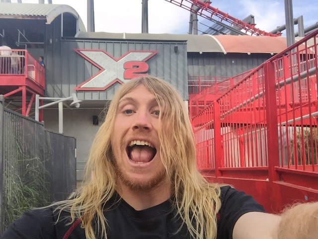
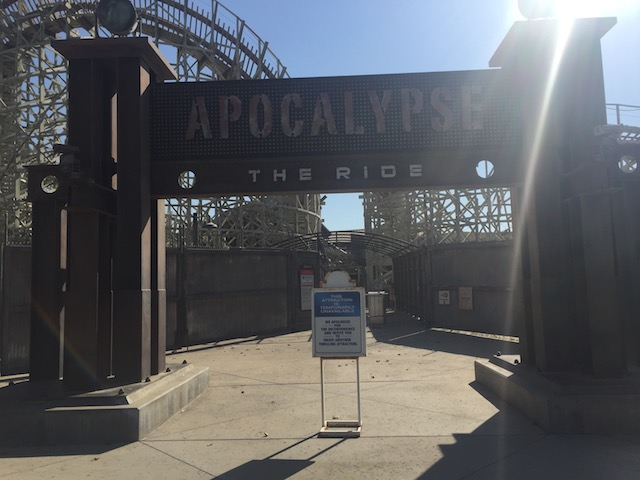
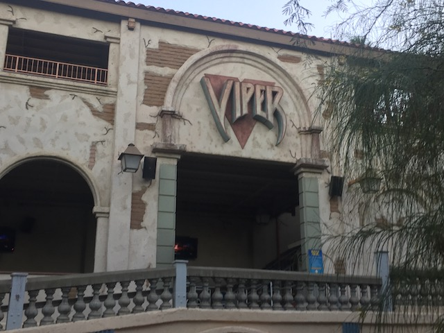

| |
Six Flags Magic Mountain Summer 2018
 All right. We're back at Six Flags Magic Mountain. I haven't had too many chances to get out here due to being busy and all sorts of crap like that. But we always do a big SFMM Update for all our summer visits every year, and while this isn't a huge update, it does encapsle all the visits we've taken to the park in the summer (plus a spring visit, oh, and a fall visit too). And of course, when you're at Six Flags Magic Mountain, you gotta get out and do the RMC.
All right. We're back at Six Flags Magic Mountain. I haven't had too many chances to get out here due to being busy and all sorts of crap like that. But we always do a big SFMM Update for all our summer visits every year, and while this isn't a huge update, it does encapsle all the visits we've taken to the park in the summer (plus a spring visit, oh, and a fall visit too). And of course, when you're at Six Flags Magic Mountain, you gotta get out and do the RMC.

No matter what, Scream never seems to have a long line. And it's right by one of the best coasters in the park. So it tends to get ridden a lot. ;)
 I don't get the people saying that Scream is rough. Really!? How!? Am I just that more tolerant of roughness than others or are some coaster enthusiasts just super sensitive to it (Spoilers: It's the latter)?
I don't get the people saying that Scream is rough. Really!? How!? Am I just that more tolerant of roughness than others or are some coaster enthusiasts just super sensitive to it (Spoilers: It's the latter)?
 I know I'm generally not the person who's a big fan of cloning everything, but yeah. Batmans are awesome rides. =)
I know I'm generally not the person who's a big fan of cloning everything, but yeah. Batmans are awesome rides. =)

So...Is Green Lantern just offically SBNO at this point?
Ooh. Construction photos! =)
Just add water and...whala! A giant frisbee will appear!
 Far from the best hyper coaster, but it's still a very fun ride.
Far from the best hyper coaster, but it's still a very fun ride.

Thank you Six Flags Magic Mountain! I know I haven't been pleased with a lot of recent actions, but putting the zipper pouches on more rides, I am a huge fan of. I know they were originally just on New Texas Giant, then they expanded and were added to Twisted Collosus. And now, they're on Goliath. Thank you for doing this. Please keep adding them to the rest of your rides Six Flags. =)
Ooh. Good timing with Goliath. As...yeah. It broke down right after we rode.

I know I always say this, but make sure you look down while on this ride. ;)
 It really makes me sad seeing these Arrow Suspended coasters get more and more rare.
It really makes me sad seeing these Arrow Suspended coasters get more and more rare.
 OK. I'm not sure if I've ever seen a line for Jet Stream that bad. Not good.
OK. I'm not sure if I've ever seen a line for Jet Stream that bad. Not good.
"YAY!!! NEW CREDIT!!!"
I think you know the credit whore drill at this point.

Given how a certain Flyer I rode this year is in the news, Might as well throw in Tatsu. The other flyer I rode this year. And yeah. I'm a fan of these rides. =)

Hey Alex! Look where I am now!
Visit #2. Ooh. I like the shade you've added. Makes things better when a big line forms right around here.
OK. Time to jump ahead to recently. I recently did a trip to the park for the sake of doing a photo run to make this update (Only rode Twisted Collosus once because it was so packed and I needed to kill time). I was never planning on having any part of this day in the update (aside from using stock photos I took). But the more I thought about this, the more I realized that I had to share this story in the update. So the park is packed, and I'm annoyed that the line is going slow. Whatever. I finally get to the front, scan my pass, and then the person at the ticket says "Is this a Gold Pass? Sorry, Gold Passes are blocked out today because it's Fright Fest. You'll have to buy a ticket". WHAT THE F*CK!? So I storm off, mumbling to myself that SFMM must've added in blackout days in an attempt to make more money. F*ck! I'm out by the grass by the road by X2, because damn it! I came to get stock photos! And I will get them! Even if I shoot them all from the parking lot and outside the park! Plus, I had 4 hours to kill. While waiting for trains, I look on my phone at the Six Flags website to try and see where the hell they cover blackout dates, but I see nothing. What I do repeatedly see in the ads trying to get you to buy a season pass is "UNLIMITED VISITS". And then I realized "If I am unable to go in the park today, then why the hell did the people at parking allow me to use my season pass to park in the parking lot?". So I decide to try again, because...I've got hours to kill. I try with another attendent, and BOOM! I'm in the park. There's no rules on blackout days and being unable to go in the park. Was that earlier employee just massively stupid (Hey, I briefly worked at Front Gate for a couple days during my time working at SFMM. It's not that hard) or did they just not want me in for some unknown reason? All I know is that one employee seriously needs some disciplinary action. Cause that is NOT OK. Anyways, back to our summer visit.
OK. Let's be nice to SFMM again. I know it's just a minor tweak, but I love the updated Coaster Candy sign.
Yeah. This is the reason that I came out to Six Flags Magic Mountain today.
Normally, I'd NEVER wait in a line like that. But....this is the only reason I bothered to come out today. I'll just put on a podcast.
So Crazanity (Nice Name) is one of those Zamperla Giant Frisbees that have been popping up at all the Six Flags parks. Fine with me, as I love these rides.
So technically, this giant frisbee is slightly bigger than all the others, because you know, SFMM's gotta have it's records. ;) Yeah, it's noticeable looking at it (You freaking see Crazanity driving on the 126 with all the other coasters), but on the ride, that extra height doesn't mean a thing. Rides like all the other giant frisbees.
I know I would say that I want these things to spread like wildfire, but my wish already came true. So no need. =)
The views you get of SFMM from here really are great.
 Always good to see Twisted Collosus dueling, even if accidentally. ;)
Always good to see Twisted Collosus dueling, even if accidentally. ;)
Also new for this year was Jammin' Bumpers, which were new bumper cars to replace Sandblasters. Didn't ride them, but they did look nicer for sure. And considering how much Sandblasters sucked, worst case scenario, it's on par with it as far as riding goes.
OH yeah. SFMM also repainted Scrambler to go with the area. I know SFMM just repainted Scrambler not too long ago, but that paint job was ugly. This is so much nicer.
Congratulations. You finally got me to ride Scrambler again.
Hmm. More Construction. I thought all the 2018 projects were done?
While I didn't know at the time I shot this photo, but that's the plot of dirt that will soon become West Coast Racers. Looks like it'll be a fun ride.

Dear SFMM Maintenence, please FULLY fix Terminator/Apocalypse. NOT just do the bare minumum to get it running again so it'll be plauged with the same problems, still be rough, and then shortly close yet again. >=(

It's not nearly as rough as people are making it out to be.
 It's not a trip to SFMM without riding X2.
It's not a trip to SFMM without riding X2.
And finally, we close out on another "F*CK THIS GAS STATION!" story (I can't believe this is now a freaking story category). So yeah. I'm on my way from SFMM, heading home, and I need gas. So I stop at the Arco station in Piru. I try and gas up, but the machine won't accept my card. Some unknown error. I try again with the next one. Same error. I try again and again. Same error. Same error. WHAT THE F*CK!? SHUT UP AND TAKE MY MONEY!! I was gonna go in and ask the people inside "WHAT THE F*CK IS WRONG WITH YOUR MACHINES!!?" But there was a long line inside and I just thought to myself "You know what!? This isn't worth my time! SCREW THIS!!!" and drove to Fillmore and gassed up at one of those gas stations. Easily the 2nd worst gas station story (Amarillo will always be #1). I would say "I'm never gassing up here again!", except...I've gassed up here like hundreds of times. If you drive on the 126, it's impossible to miss this gas station. It's at one of the few stop lights on the freeway. And I've never had an issue here until today. So...yeah. Sorry to end this update on a rant, but yeah. Six Flags Magic Mountain was fun this year, and I'm looking foreward to coming back next year for West Coast Racers.
Home
|